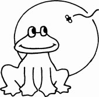

Arrossega els monitors als grups, o toca un monitor i després el grup.
Parelles de monitors que no poden anar junts. Si coincideixen al mateix grup, es marcaran en vermell.
Toca C, M o D per marcar els carnets (conduir, monitor, director). Les preferències de moment només es guarden.